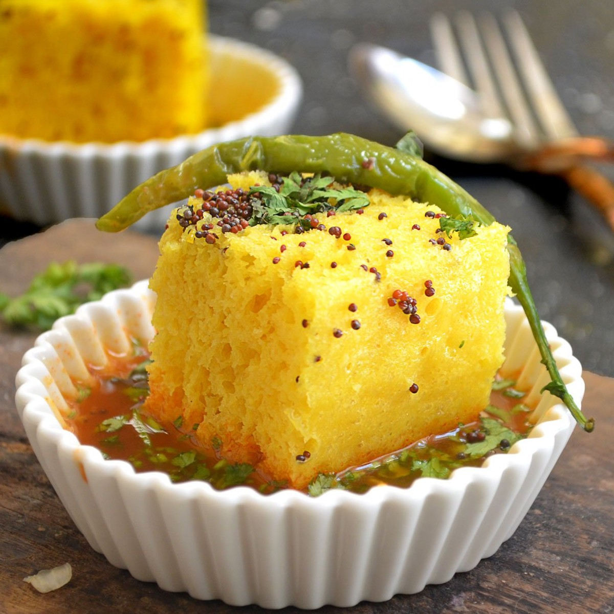

Dhokla Recipe

Recipe Source: Gemini AI
Dhokla is a savoury and spongy steamed cake made from gram flour (besan), originating from
Gujarat, India. Here's a basic recipe:
Ingredients:
- 1 cup gram flour (besan)
- 1/2 cup water
- 1/4 teaspoon lemon juice
- 1/4 teaspoon sugar
- 1/4 teaspoon salt
- 1/4 teaspoon turmeric powder
- 1/8 teaspoon baking soda (optional)
- 1/4 teaspoon fruit salt (Eno)
- Oil for greasing.
For the tempering:
- 1 tablespoon oil
- 1/2 teaspoon mustard seeds
- 1 green chili, finely chopped (optional)
- A few curry leaves.
- 1/4 cup water
- 1/2 teaspoon sugar
- Salt to taste
- Chopped coriander leaves (cilantro) for garnish.
Instructions:
- Prepare the batter:
In a large bowl, whisk together the gram flour, water, lemon juice, sugar, salt, and
turmeric powder until smooth and lump-free.
Cover the bowl and let it rest for 30 minutes.
- Add leavening agent:
Just before steaming, add the baking soda (if using) and fruit salt (Eno) to the batter
and mix gently until incorporated. Do not overmix as this can affect the sponginess of
the dhokla.
- Steam the dhokla:
Grease a baking dish or plate with oil.
Pour the batter into the greased dish, spreading it evenly.
Place the dish in a steamer with enough water and bring it to a boil.
Steam the dhokla for 10-15 minutes, or until a toothpick inserted into the centre comes
out clean.
- Prepare the tempering:
While the dhokla is steaming, heat oil in a small pan over medium heat.
Add mustard seeds and let them splutter.
Add green chili (if using) and curry leaves, and sauté for a few seconds.
Pour in the water, sugar, and salt.
Let the water simmer for a minute.
- Assemble and serve:
Once cooked, remove the dhokla from the steamer and let it cool slightly.
Cut the dhokla into squares or desired shapes.
Pour the hot tempering over the dhokla.
Garnish with chopped coriander leaves and serve hot with green chutney or any desired
chutney.
Tips:
For a fluffier dhokla, use self-rising gram flour (besan) if available.
If the batter is too thick, add a little more water to thin it out.
You can adjust the amount of lemon juice, sugar, and salt to your taste.
Dhokla can be stored in an airtight container in the refrigerator for up to 2 days.
Enjoy your delicious homemade dhokla!